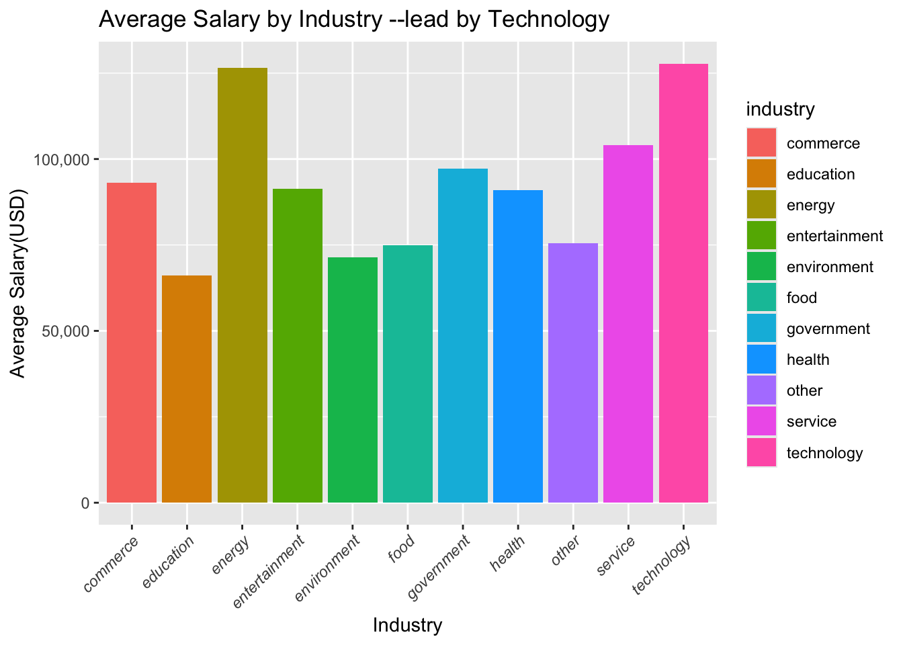
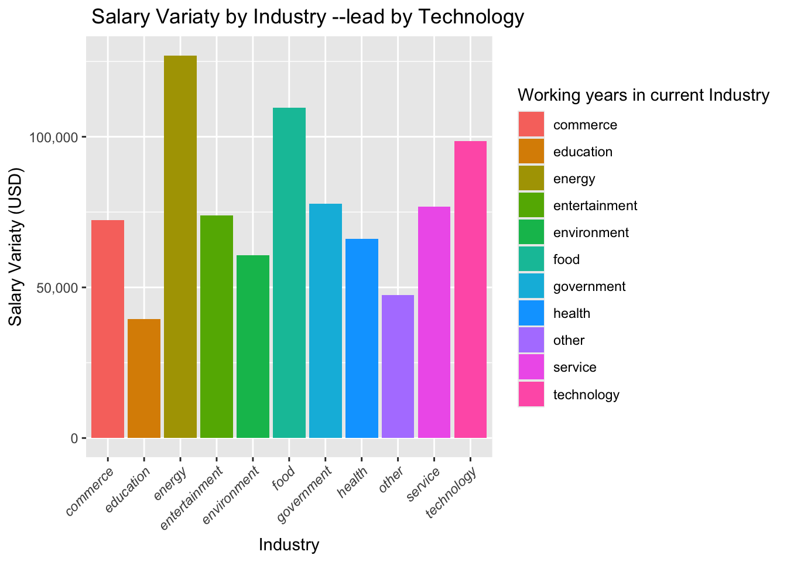
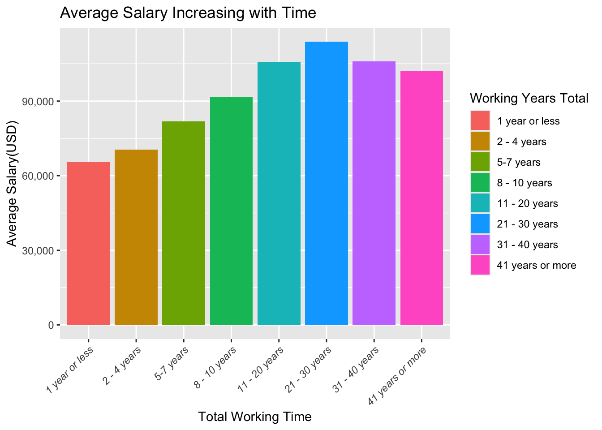
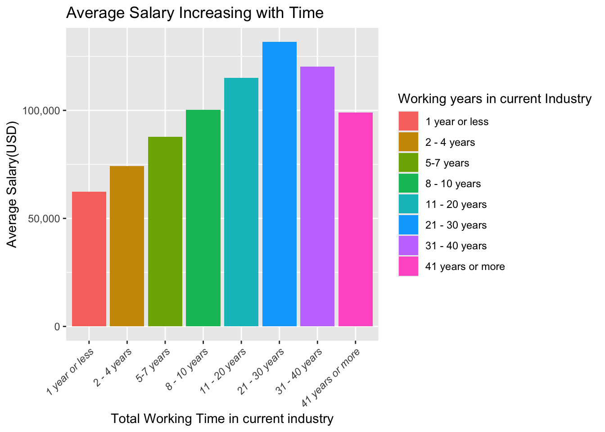
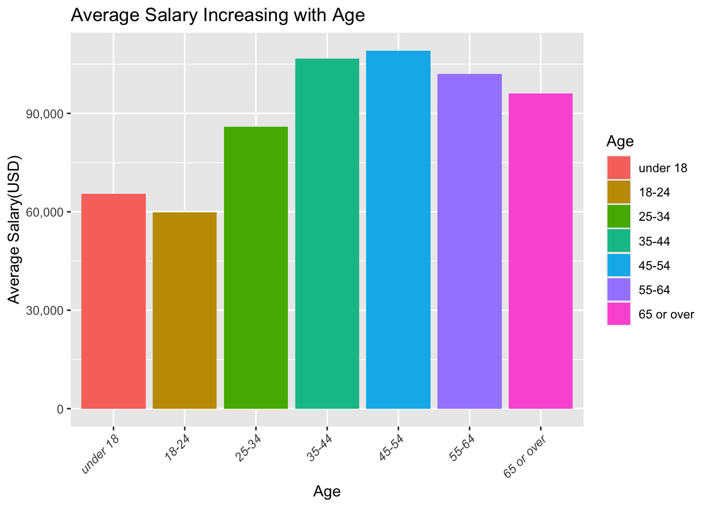
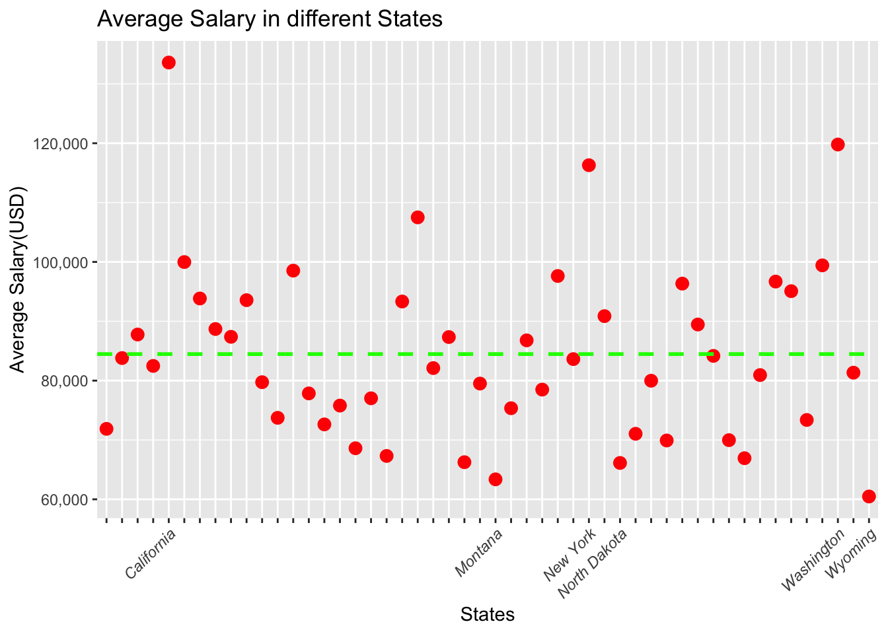

This assignment is meant to reinforce and assess the following skills:
Basic and intermediate data wrangling skills in R, including
Mutating, filtering, summarizing
Dealing with a variety of variable types
Applications of regular expressions
Data cleaning
Data visualization in ggplot
Critical thinking skills
Your task
Since the beginning of the Covid-19 pandemic, the workforce has undergone rapid changes, with some industries being more affected than others. In this assignment, you will analyze salaries by industry/jobs, and investigate trends in these industries/jobs over time. You will be using the ask_a_manager.xlsx data set provided on Courselink (from here). This data set was created using a form with several columns being “free text”, and are hence messy. Feel free to do some research on these data.
Throughout your analysis of these data, you should aim to answer the following questions:
Which industry or industries have the highest/lowest salaries?
Which industries have the highest salary variability?
How do salaries vary over time and geography?
You should also offer insights as to why you observe what you observe, mentioning limitations with the data when relevant.
Instructions
Your assignment should consist of two sections. The first section should be used to document important data cleaning steps and their justifications. This should be a combination of:
Annotated code that is clear, concise, and demonstrates techniques we learned in class.
Written justification of why certain data-related decisions were made, when applicable.
The second section should have up to five data visualizations, alongside written descriptions of each. Describe how your visualizations help you answer the above questions, but also discuss their limitations. Format this section like a short essay, using your visualizations to reinforce your arguments.
Submission
You should complete your assignment using Quarto or Rmarkdown. You should submit a code file and html/pdf with your report. The TA should be able to reproduce your report with minimal effort.
Tips
There are a myriad of ways you could approach this assignment, just because your friend is doing it one way, doesn’t mean you should. Me and my TA respect originality.
Be concise and specific. Concise code and descriptions are your best friend. Please do not submit ChatGPT “valuable insights” paragraphs that could apply to any analysis. When discussing data limitations, try to offer specific limitations about these data, not limitations that could be said about any data. E.g rather than say “there are missing values”, you may discuss how missingness impacts your ability to answer one of the questions, and what the impact may be.
Use methods shown in class wherever possible.
Take pride in your final report’s format. In consulting, there is a saying: “If it looks right, it is right”. Although I don’t really believe this, a well formatted report builds trust in the reader.
Use descriptive figure captions.
Data Import and Cleaning
Package loading
library(scales)library(quantmod)
Loading required package: xts
Loading required package: zoo
Attaching package: 'zoo'
The following objects are masked from 'package:base':
as.Date, as.Date.numeric
Loading required package: TTR
Registered S3 method overwritten by 'quantmod':
method from
as.zoo.data.frame zoo
library(dplyr)
######################### Warning from 'xts' package ##########################
# #
# The dplyr lag() function breaks how base R's lag() function is supposed to #
# work, which breaks lag(my_xts). Calls to lag(my_xts) that you type or #
# source() into this session won't work correctly. #
# #
# Use stats::lag() to make sure you're not using dplyr::lag(), or you can add #
# conflictRules('dplyr', exclude = 'lag') to your .Rprofile to stop #
# dplyr from breaking base R's lag() function. #
# #
# Code in packages is not affected. It's protected by R's namespace mechanism #
# Set `options(xts.warn_dplyr_breaks_lag = FALSE)` to suppress this warning. #
# #
###############################################################################
Attaching package: 'dplyr'
The following objects are masked from 'package:xts':
first, last
The following objects are masked from 'package:stats':
filter, lag
The following objects are masked from 'package:base':
intersect, setdiff, setequal, union
My process would be group all data by industries, then take the average of income in each group and order them to find the lowest and highest salaries.
First, take the relative columns we want, which includes ‘industry’, ‘job’, ‘job_more’, ‘annual_salary’, ‘compensation’, ‘currency’, ‘other’, ‘income_more’
Next, check the total types of industries and make it easier to read.And , by unique , I find out that there’s 1132 different response,so i will use regex to mutate them.Also, i deal with the NaNs first.
Then mutate the industry columns to classify all responses. i give 10 specific industries and put the left to ‘other’.The 10 industries are : education, food, entertainment, technology, environment,service,health,commerce,government,energy and other.
As there’s no NAs in annual_salary, add compensation to the annual salary to get the total income of a year. For missing. values in compensation, just treat it as 0.
Then i can deal with the currency now. First make sure all rows have a currency, and convert into USD.For those NA currency, i will simply remove them.
Then use quantmod to fix the currency rate by creating a currency table.And compute the final salary in USD.And i will treat those whose salaries > 1,500,000 as outliers.
Q1:Which industry or industries have the highest/lowest salaries?
Now, group by industries, and compute the average income
avg_salary = salaries_industry %>%group_by(industry) %>%summarize(mean(final_pay))ggplot(avg_salary, aes(x = avg_salary$industry, y = avg_salary$`mean(final_pay)`, fill = industry)) +geom_bar(stat ="identity") +labs(title ="Average Salary by Industry --lead by Technology",x ="Industry",y ="Average Salary(USD)")+theme(axis.text.x =element_text(angle =45, hjust =1, face ="italic") ) +scale_y_continuous(labels = comma)

Through the plots, we can easily tell that Technology is having the highest average salary.
Q2:Which industries have the highest salary variability?
I can show this through terms of standard deviation to represent the variability :
variaty_salary = salaries_industry %>%group_by(industry) %>%summarize(sd(final_pay))ggplot(variaty_salary, aes(x = variaty_salary$industry, y = variaty_salary$`sd(final_pay)`, fill = industry)) +geom_bar(stat ="identity") +labs(title =" Salary Variaty by Industry --lead by Technology",x ="Industry",y ="Salary Variaty (USD)",fill ="Working years in current Industry") +theme(axis.text.x =element_text(angle =45, hjust =1, face ="italic") ) +scale_y_continuous(labels = comma)

As the Graph shows, energy is the industry with the highest variability
Q3:How do salaries vary over time and geography?
By All Time
First check the data of age.AS there is no existing NAs, group the data by working_years_all and compute the average income.
avg_income_all_time = salaries_industry %>%group_by(working_years_all) %>%summarize(mean(final_pay))levels =c("1 year or less", "2 - 4 years", "5-7 years", "8 - 10 years", "11 - 20 years", "21 - 30 years", "31 - 40 years", "41 years or more")avg_income_all_time$working_years_all =factor(avg_income_all_time$working_years_all, levels = levels)ggplot(avg_income_all_time , aes(x = avg_income_all_time$working_years_all , y = avg_income_all_time$`mean(final_pay)`, fill = working_years_all)) +geom_bar(stat ="identity") +labs(title ="Average Salary Increasing with Time ",x ="Total Working Time",y ="Average Salary(USD)",fill ="Working Years Total")+theme(axis.text.x =element_text(angle =45, hjust =1, face ="italic") ) +scale_y_continuous(labels = comma)

From the graph, i can conclude that, before 31 years of experience, the payment is having positive relationship with working experience, while after 31 years, the average income starts to go down, but still higher than those workers with less than 10 years experience, And there’s a huge increasement between 8-10 years and 11-20 years.
By Specific Time
This time, try find the relation between average income and working time in the current industry
avg_income_current_time = salaries_industry %>%group_by(working_years_current) %>%summarize(mean(final_pay))levels =c("1 year or less", "2 - 4 years", "5-7 years", "8 - 10 years", "11 - 20 years", "21 - 30 years", "31 - 40 years", "41 years or more")avg_income_current_time$working_years_current =factor(avg_income_current_time$working_years_current, levels = levels)ggplot(avg_income_current_time , aes(x = working_years_current , y =`mean(final_pay)`, fill = working_years_current)) +geom_bar(stat ="identity") +labs(title ="Average Salary Increasing with Time ",x ="Total Working Time in current industry",y ="Average Salary(USD)",fill ="Working years in current Industry")+theme(axis.text.x =element_text(angle =45, hjust =1, face ="italic") ) +scale_y_continuous(labels = comma)

This is looking similar as the total working time , the peak appears at 21-30 years of working experience and fall down after. And before 31 years of working, the salary increase with time.
By Age
I will do the same procedure with age to check if it’s the same pattern.
avg_income_age = salaries_industry %>%group_by(age) %>%summarize(mean(final_pay))levels =c("under 18", "18-24", "25-34", "35-44", "45-54", "55-64", "65 or over")avg_income_age$age =factor(avg_income_age$age, levels = levels)ggplot(avg_income_age, aes(x = age, y =`mean(final_pay)`, fill = age)) +geom_bar(stat ="identity") +labs(title ="Average Salary Increasing with Age ",x ="Age",y ="Average Salary(USD)",fill ="Age")+theme(axis.text.x =element_text(angle =45, hjust =1, face ="italic") ) +scale_y_continuous(labels = comma)

Now the highest average salary is still those with approxiamtely 30 years working experience, and wierd to find that the lowest falls inn 18-24, but not those who are under 18,and people are getting increasing salary along with time before 54.
By Country
First , i will do salaries against countries, and as there’s so many countries, i will only pick USA, CAN, UK, CHN for comparison.
Its obvious that USA is leading the the average salary, but it may caused by the insufficient data of other countries, So i would like to step further to USA, to compare the salaries between different states. And i will pick the first appeared states.
ggplot(avg_income_state, aes(x = us_province, y =`mean(final_pay)`)) +geom_point(color ="red", size =3) +geom_hline(yintercept = avg_value, linetype ="dashed", color ="green", size =1) +labs(title ="Average Salary in different States ",x ="States",y ="Average Salary(USD)", ) +theme(axis.text.x =element_text(angle =45, hjust =1, face ="italic") ) +scale_y_continuous(labels = comma) +scale_x_discrete(breaks = avg_income_state$us_province, labels = x_labels)

Now i can tell from the graph that the highest 3 salaries are California, Washington and New York which are Metropolitan cities, while, Wyoming, Montana and North Dakota are the lowest 3 salaries in US.Also, the average salary is 84472.